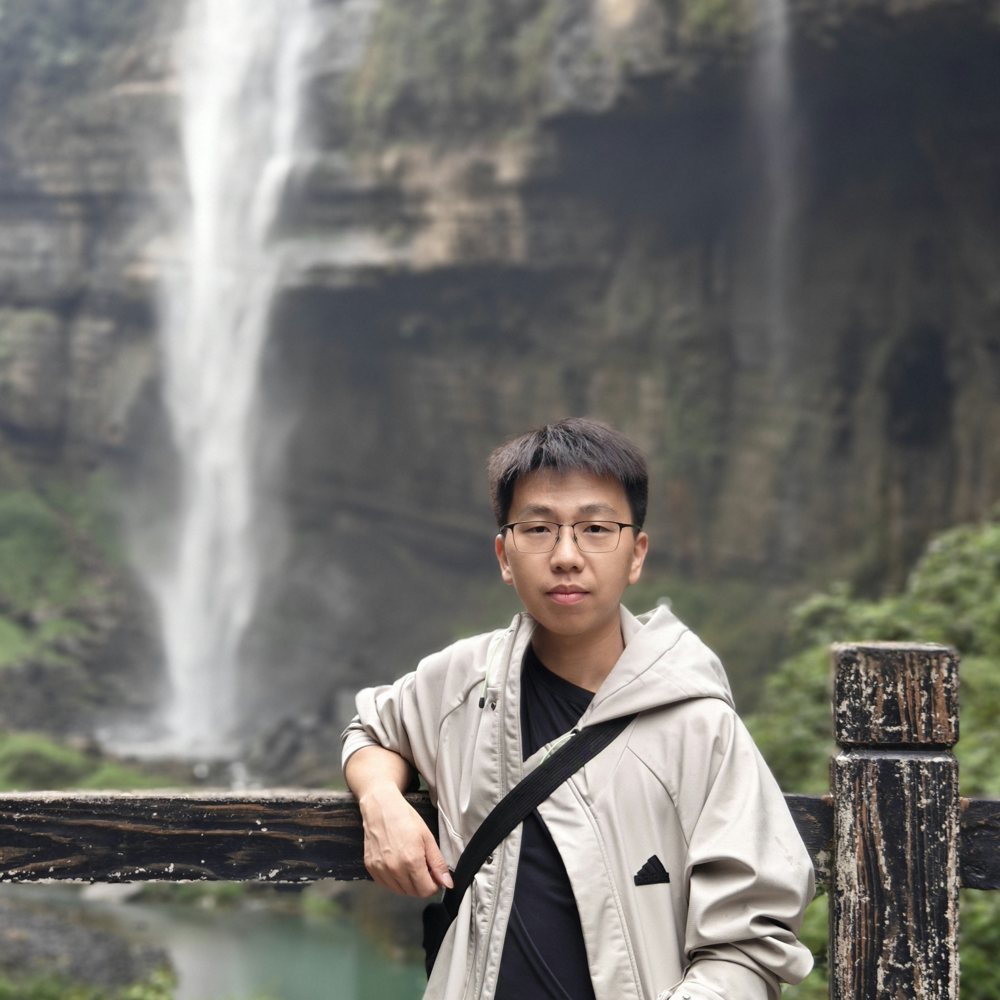

Zijian Wu (巫子健)
M.S. student @ NJU-3DV
Nanjing University
Email: zijianwu02 [AT] gmail [DOT] com

About Me
I'm now a second-year master's student in NJU-3DV Lab, supervised by Prof. Hao Zhu and Prof. Xun Cao. I received my bachelor degree at Nanjing University in 2024.
I am currently a research intern at Ant Research, working with Boyao Zhou.
My research interests lie in video generation and human-centric vision.
Experience
Nanjing University
M.S. student @ NJU-3DV
Advisor: Prof. Hao Zhu and Prof. Xun Cao
Sep. 2024 - Present
Nanjing University
B.Sc. in Electronic Information Science and Technology
Sep. 2020 - Jun. 2024
Publications
CVPR 2026 Highlight

UIKA: Fast Universal Head Avatar from Pose-Free Images
CVPR 2026

AvatarPointillist: AutoRegressive 4D Gaussian Avatarization
CVPR 2025

FATE: Full-head Gaussian Avatar with Textural Editing from Monocular Video
Honors & Award
Outstanding Graduate Student of Nanjing University, 2025
Graduate Student Scholarship (First Class), 2024 & 2025
People's Scholarship, 2022 & 2023
Nanjing University 01 Electronic Scholarship (Top 10%), 2021